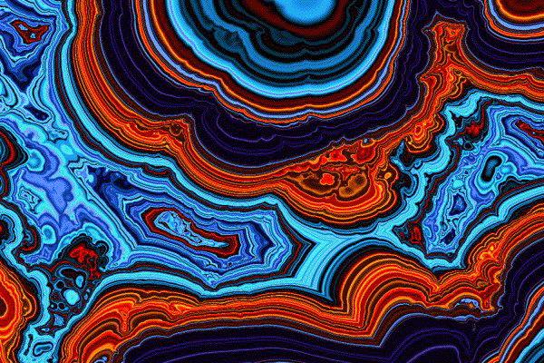
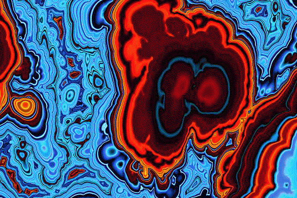
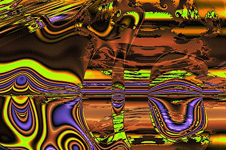

| Steven Rooke
http://www.azstarnet.com/~srooke/ has applied
genetic algorithms to evolve fractal art, constructed from Mandelbrot set themes.
Rooke starts with populations of about 100 images, assigns each an
aesthetic fitness, and evolves the population by standard
genetic algorithm techniques: the
least-fit images are removed, and the most-fit reproduce by crossover and mutation of genotypes.
Here is his description: |
I selectively breed my images in a tradition inspired by evolutionary
art pioneer Karl Sims. From a library of images dating back to a primordial soup of virtual
DNA I began constructing in 1993, I initiate a run by creating a population of around 100
images on a large computer screen. I examine each image and assign it an aesthetic fitness
score, then command the population to spawn. Reproduction is accomplished by sexual mixing
of virtual genes mostly from the fittest parents, accompanied by occasional random mutation,
while particularly fit individuals survive intact into the next generation. A mosaic of new
images then fills the screen and the cycle is repeated.
|
| The technical details of the genetic desctiption of a picture are
quite complicated, and many parameters are involved in the genome of each picture. A good
indication of the complicated nature of the genotype is given by noting crossover of the
left and central pictures (parents) produces the right picture (child). |
|
| Here are four of his pictures. Click each to
enlarge. |
|
| Here are some recent additions to Rooke's experiments, using
fractional Brownian motion (fBm) and
multifractals. Click each to enlarge. |
 |
 |
| Single mulitfractal, lacunarity 0.83 |
Musgrage Agate, fBm |
|  |
 |
| more Musgrave agate |
4 multifractals, chattering away |
|
{kind=link}
{kind=link}
{kind=link}